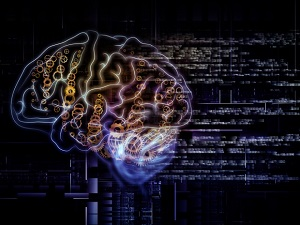

Что я знаю об искуственном интеллекте?
Искусственный интеллект как научное направление возник и начал активно развиваться после Второй мировой войны. С тех пор в этой области разрабатываются модели и методы решения задач, традиционно считавшихся интеллектуальными и не поддававшихся формализации и автоматизации.Само направление определено как "искусственный интеллект" в силу того, что основой всех его методов являются попытки копирования и моделирования существующих в природе интеллектуальных механизмов, таких как работа центральной нервной системы позвоночных, иммунитет, поведенческие реакции.
Системы, относящиеся к системам ИИ в настоящее время:
- Экспертные системы. Первые системы, которые нашли широкое применение. Их элементы используются в системах проектирования, диагностики, управления и играх. Основаны на вводе знаний высококвалифицированных специалистов в ЭВМ и разработке специальной системы по их использованию.
- Системы естественно - языкового общения. Данные системы позволяют производить обработку связанных текстов по какой – либо тематике на естественном языке.
- Системы речевого общения.
- Системы обработки визуальной информации. Находят применение в обработке аэрокосмических снимков, данных, поступающих с датчиков, роботов и автоматизированных систем.
- Системы машинного перевода. Подразумеваются естественные языки человеческого общения.
- Системы автоматического проектирования. Без этих систем не может обойтись ни одно крупное машиностроительное предприятие.
Дополнительную информацию можно прочитать здесь